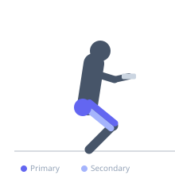
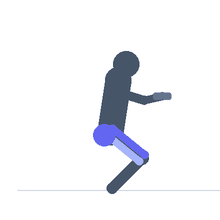

Exercise guide / Duck Walk
Duck Walk
A loaded locomotion exercise performed in a deep squat position, walking forward with short steps while maintaining a consistent low position. The duck walk builds quad endurance, glute strength, and challenges hip mobility over a large range of motion under sustained muscular tension.
Primary muscles
rectus femoris
vastus lateralis
vastus medialis
gluteus maximus
Secondary muscles
gluteus medius
biceps femoris long head
adductor magnus
Stabilizers
transverse abdominis
gastrocnemius medial
Equipment
Dumbbell (Fixed)
Optional
Kettlebell
Weight Plates


Starting position
- Hold a dumbbell at chest height in a goblet position or at both sides. Descend into a deep squat position with feet shoulder-width apart.
Setup
- Select a moderate weight. Clear a straight path of at least 10 to 15 meters. Begin in a deep squat.
Steps
- Step 1: Lower into a deep squat, keeping your chest up and feet flat on the floor.
- Step 2: Take small deliberate steps forward while maintaining the low squat position throughout.
- Step 3: Keep knees tracking over your toes with each step.
- Step 4: Continue for the prescribed distance or duration, then stand to rest.
Coaching cues
- Stay low throughout
- Knees track over toes on every step
Breathing
- Breathe rhythmically throughout. Short breaths are normal due to trunk compression.
Range of motion
- Maintain thighs at or below parallel throughout the entire walk.
Tempo
- Continuous movement — deliberate steps
Common mistakes
- Allowing the hips to rise during the walk, reducing the squat depth
- Letting the heels come off the floor
Safety
- Avoid if you have significant patellar tendinopathy or acute knee injuries
- Start with bodyweight before adding load
Training
- strength: 3–8 reps
- hypertrophy: 8–15 reps
- endurance: 15–25 reps
- strength: 3–5 sets
- hypertrophy: 3–4 sets
- endurance: 2–3 sets
- Rest: {'strength': 180, 'hypertrophy': 90, 'endurance': 45}